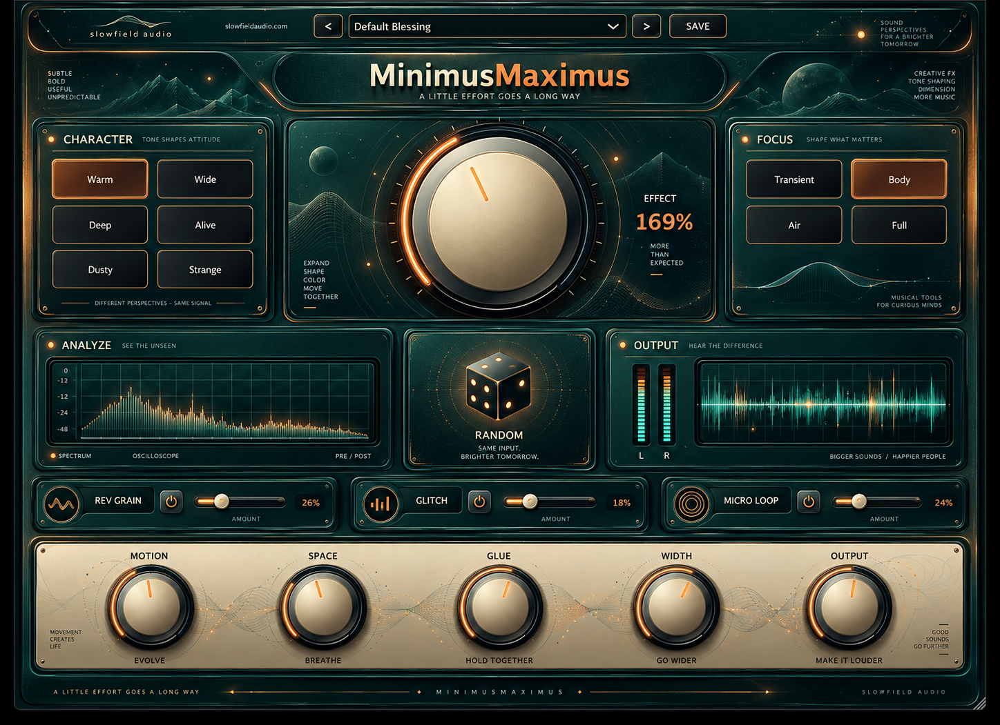

Choose a Character and Focus, then move the sound with one large Effort macro. MinimusMaximus keeps the surface immediate while Rev Grain, Glitch, Micro Loop, RANDOM and FLIP open the door to stranger movement.

Start with a Character and Focus, then raise Effort until the sound feels alive without losing its identity. Add Rev Grain, Glitch or Micro Loop only when you want more obvious movement.
MinimusMaximus is designed so the main controls feel related rather than like separate effects. Effort coordinates the transformation; the lower controls then shape how much motion, space, glue and stereo scale remain.
MinimusMaximus is being shared early so real sessions can reveal host-specific bugs, awkward gain changes and places where the creative effects stop feeling musical.
We also want to know which Character and Focus combinations become the useful everyday starting points.